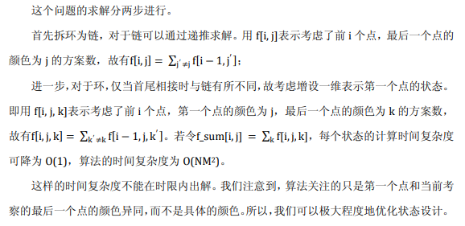

浅析一类要求相邻不同的环上染色问题
经典
我们先来解决最经典的圆环染色问题。
一个环上有\(n\)个点，每个点染为\(m\)种颜色之一，要求相邻两点颜色不同。求可行的方案数。
这里有一道题的部分分是这个问题：uoj#241. 【UR #16】破坏发射台

那么，设\(f[i][0/1]\)表示当前正在决定第\(i\)位的颜色，且要求该颜色是否（\(0/1\)）与第\(1\)位颜色相同。
对于\(f[i][1]\)没啥好决定的，第\(i\)位必须与第\(1\)位相同，所以系数是\(1\)。
对于\(f[i][0]\)分两种情况，一种前接\(f[i-1][1]\)，这时第\(i-1\)位颜色与第\(1\)位颜色相同，有\((m-1)\)种颜色供第\(i\)位选择。一种是前接\(f[i-1][0]\)，第\(i-1\)位与第\(i\)位不同了，第\(i\)位不能与其中任一相同，只有\((m-2)\)种可以选。 \[ \begin{aligned} f[i][0] &= (m-2) f[i-1][0] + (m-1) f[i-1][1] \\ f[i][1] &= f[i-1][0] \end{aligned} \]
初始状态很重要，保险的定义应该从\(2\)开始，但是根据意义从\(1\)开始也无妨。
#include<iostream>
#include<cstdio>
#include<cmath>
using namespace std;
typedef long long ll;
const ll MOD=998244353;
const ll MXN=1E7+5;
ll f[MXN][2];
int main(){
ll N,M;scanf("%lld%lld",&N,&M);
f[1][0]=0,f[1][1]=M;
for(ll i=2;i<=N;i++){
f[i][0]=((M-1)*f[i-1][1]+(M-2)*f[i-1][0])%MOD;
f[i][1]=f[i-1][0]%MOD;
}
cout<<f[N][0];
return 0;
}上面这个dp其实还可以更优，用矩阵快速幂可以优化，也可以用特征根等方式推出通项公式\((m-1)^n+(m-1)(-1)^n\)。
下面介绍几种变种，本质其实是一样的，可以根据题目灵活选择。
可以考虑钦定第\(1\)位的颜色，把枚举第\(1\)位颜色放在求答案部分。
可以考虑假设出一个第\(0\)位的颜色，这样环的要求变为第\(0\)为与末位相同，即答案变为\(f[n][1]\)。好处在于可以将初始状态提前到第\(0\)位设置。
还有另一种dp的方式是钦定当前位的颜色，考虑前一位可以选那些颜色。状态转移方程是： \[ \begin{aligned} f[i][0] &= f[i-1][1] + (m-2) * f[i-1][0] \\ f[i][1] &= (m-1) * f[i-1][0] \end{aligned} \]
既然是钦定，答案就需要另外乘\(M\)来枚举颜色。
总之，都是拆环为链，压缩无用状态，用一个\(0/1\)位保留环的限制。
我们从中获取了一种处理这类环上dp的思路，即增设0/1位来维护首尾信息
利用该模型，可以解决许多变种问题。
破坏发射台
一句话题意：长度为 \(n\) 的环，每个点染色，有 \(m\) 种颜色，要求相邻相对不能同色，求方案数对 \(998244353\) 取模的结果。（定义两个点相对为去掉这两个点后环能被分成相同大小的两段）
\(n,m \le 10^9\)
对于长度为奇数的环，就是经典问题，矩阵快速幂或者直接通项公式即可。
对于长度为偶数的环，就有点复杂了。因为要考虑相对点之间的相互影响，不妨将它们捆在一块，装在一个状态里考虑。然后，我们需要处理环的上半部分和下半部分的相互接触问题，类比处理经典问题的思路，
我们设第一格的颜色为 \(A\)，设第 \(n/2+1\) 格的颜色为 B，然后设个二元三进制状态表示第 i 格和第 \(n/2+i\) 格的颜色是否为颜色 A 或颜色 B（\(1≤i≤n/2\)）。
设 \(F[i][0..8]\) 表示推到第 \(i\) 格的所有二元三进制状态的合法方案数，然后递推一波即可。
——UOJ Round #16 题解
这个讨论有点变态，，，代码就咕了（
彩色圆环
试题来源
2010中国国家集训队命题答辩
问题描述
小A喜欢收集宝物。一天他得到了一个圆环，圆环上有N颗彩色宝石，闪闪发光。小A很爱惜这个圆环，天天把它带在身边。
一天，小A突然发现圆环上宝石的颜色是会变化的。他十分惊讶，仔细观察这个圆环后发现，圆环上宝石的颜色每天变化一次，而且每颗宝石的颜色都等概率地为特定的M种颜色之一。小A发现了这个秘密后，对圆环更是爱不释手，时时刻刻都在研究。
又经过了一段时间，小A发现因为圆环上宝石的颜色不断变化，圆环有时会显得比其他时候更美丽。为了方便比较，小A这样定义圆环的“美观程度”：
设圆环上相同颜色的宝石构成的连续段长度分别为a1, a2, …, an；
定义圆环的“美观程度” \(R = \prod_{i=1}^{n} a_i\) 。以图一给出的圆环为例，有a1 = 3, a2 = 2, a3 = 1，故R = 6。
现在小A想知道，在上述前提下，圆环的“美观程度”的期望值E(R)是多少。因为如果知道了E(R)，他就可以判断每天变化出的新圆环是否比一般情况更美丽。
说明：“美观程度”的期望值即为对每种可能的圆环状态的“美观程度”与其出现概率的乘积进行求和所得的值。
输入格式
输入仅有一行，该行给出依次两个正整数N, M，分别表示宝石的个数和宝石在变化时可能变成的颜色种类数。
输出格式
输出应仅有一行，该行给出一个实数E(R)，表示圆环的“美观程度”的期望值。
样例输入
3 2
样例输出
2.25
样例输入
200 1
样例输出
200
数据规模和约定
20%的数据满足1 ≤ N, M ≤ 8；
50%的数据满足1 ≤ N, M ≤ 25；
100%的数据满足1 ≤ N ≤ 200, 1 ≤ M ≤10^9。
先来看链的情况
设\(f[i]\)表示考虑到第\(i\)位时的期望美观度，按划分颜色块的思路dp，显然有 \[ f[i]=\sum_{0 \le j < i} f[j]*(i-j)*P[i-j]*(M-1) \]
其中\(P[i]\)表示连续选\(i\)个相同一种颜色的概率 \[ P[i] = M^{-i}\\ \]
\((M-1)\)代表当前颜色块的颜色要与前块不同
那么现在用圆环染色的思路来试着写环的dp式
正如解决原始版本的方式，我们拆环为链，并假设已经钦定了第\(0\)位的颜色。我们设\(f[i][0/1]\)表示考虑前\(i\)位，且要求第\(i\)位（所属块）颜色是否（\(0/1\)）与第\(0\)位颜色相同，这时的期望美观度。可得转移方程： \[ f[i][0] = \sum_{0 \le j < i} f[j][0]*(i-j)*P[i-j]*(m-2) + f[j][1]*(i-j)*P[i-j]*(m-1)\\ f[i][1] = \sum_{0 \le j < i} f[j][0]*(i-j)*P[i-j] \]
考虑如何求答案。由于无法直接获取首尾相接颜色块长度，考虑将它单独拎出来计算。枚举首尾相接颜色块两端加起来的总长度\(x\)，则总共有\(x\)种分割首尾的方案，每种方案有\(M\)个颜色可以选择（因为钦定），每个方案贡献为\(x\)，剩下的部分就可以用\(f\)来表示了。（想想钦定第\(0\)位而不是第\(1\)位的目的）
\(x=N\)时要特判，于是答案如下 \[ Ans = P[N]*N*M + \sum_{1 \le x < N} x*x*P[x]*M*f[n-x][0] \]
\(O(n^2)\)的代码
#include<iostream>
#include<cstdio>
#include<cmath>
#include<cstring>
#include<ctime>
#include<cstdlib>
#include<queue>
#include<vector>
using namespace std;
typedef long double ldb;
typedef long long ll;
const ll MXN=1005;
ll N,M;
ldb f[MXN][2];
ldb P[MXN];
int main(){
cin>>N>>M;
P[0]=1;for(ll i=1;i<=N;i++) P[i]=P[i-1]/M;
f[0][0]=0;f[0][1]=1;//f[0]时只有第0位，一定相同，故f[0][0]不合法置0，f[0][1]置单位元
for(ll i=1;i<=N;i++){
f[i][0]=f[i][1]=0;
for(ll j=0;j<i;j++){//可以从0转移，给了只有一个块转移的机会
f[i][0]+=f[j][0]*(i-j)*P[i-j]*(M-2)
+f[j][1]*(i-j)*P[i-j]*(M-1);
f[i][1]+=f[j][0]*(i-j)*P[i-j];
}
}
ldb ans=N*P[N]*M;
for(ll x=1;x<N;x++)
ans+=x*x*P[x]*M*f[N-x][0];//一个x是贡献，一个x是分割开头和结尾的方式数，f[N-x][0]则充当了中间部分
printf("%.5Lf",ans);
return 0;
}我们发现推出的dp方程有一部分是与\(j\)无关的。将它们提出来，维护剩下的只与\(j\)有关的前缀和，复杂度即可降至\(O(N)\)
前缀和优化后\(O(n)\)
#include<iostream>
#include<cstdio>
#include<cmath>
#include<cstring>
#include<ctime>
#include<cstdlib>
#include<queue>
#include<vector>
using namespace std;
typedef long double ldb;
typedef long long ll;
const ll MXN=1000005;
ll N,M;
ldb f[MXN][2];
ldb powM[MXN];//M^i
int main(){
cin>>N>>M;
powM[0]=1;for(ll i=1;i<=N;i++) powM[i]=powM[i-1]*M;
f[0][0]=0;f[0][1]=1;
ldb s_01=0,s_0j=0;
ldb s_11=1,s_1j=0;
for(ll i=1;i<=N;i++){
f[i][0] = s_01*(M-2)*i/powM[i] + s_0j*(M-2)/powM[i]
+ s_11*(M-1)*i/powM[i] + s_1j*(M-1)/powM[i];
f[i][1] = s_01 *i/powM[i] + s_0j /powM[i];
s_01 += f[i][0]*powM[i];
s_0j += f[i][0]*powM[i]*i;
s_11 += f[i][1]*powM[i];
s_1j += f[i][1]*powM[i]*i;
}
ldb ans=N/powM[N]*M;
for(ll x=1;x<N;x++)
ans+=x*x/powM[x]*M*f[N-x][0];
printf("%.5Lf",ans);
return 0;
}实际上是会炸精度的，懒得管了:p